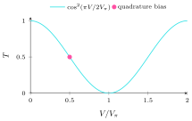

(Pockels, non-centrosymmetric crystals such as LiNbO
(Pockels, non-centrosymmetric crystals such as LiNbO , with half-wave voltage .
, with half-wave voltage .Model
Index ellipsoid . For LiNbO with field and polarisation along
with field and polarisation along  ( pm/V, ): . Electrode gap
( pm/V, ): . Electrode gap  , length
, length  , overlap
, overlap  .
.
Mach–Zehnder intensity modulator
Split, phase-shift the arms by (push–pull), recombine: , . Bias at quadrature () for linear analogue modulation; bias at null and drive for BPSK/QAM (IQ modulators nest two MZMs). Chirp-free in balanced push–pull.
Electro-absorption
In semiconductors near the band edge the field shifts and broadens absorption: Franz–Keldysh (bulk) and the quantum-confined Stark effect in QWs (strong, a few volts). EAMs integrate with DFB lasers (EML).
Worked example
LiNbO, µm,  µm,
µm,  cm, , push–pull (factor 2): V. Bandwidth is limited by velocity mismatch between microwave and optical waves: travelling-wave electrodes, and thin-film LiNbO reaching > 100 GHz.
cm, , push–pull (factor 2): V. Bandwidth is limited by velocity mismatch between microwave and optical waves: travelling-wave electrodes, and thin-film LiNbO reaching > 100 GHz.
Picture: Mach–Zehnder transfer function

Biased at the response is steepest and most linear (analogue links, OOK); biased at the null () and driven by the field changes sign (BPSK, QAM in IQ modulators).
Engineering applications
Coherent transmitters (IQ modulators for QAM), analogue RF-over-fibre links, Q-switches and pulse pickers (Pockels cells), optical phase-locked loops, quantum optics (fast phase control, squeezing measurements); in silicon, carrier-based plasma-dispersion modulators replace the Pockels effect.
Exam-style exercise
A LiNbO Mach–Zehnder at 1550 nm uses pm/V, , electrode gap µm, length 2 cm, overlap , push-pull arms. (a) for one arm. (b) With push-pull? (c) Bias for linear operation and transmission there.
Solution
(a) V. (b) Both arms shift by opposite amounts: halves to 2.6 V. (c) Quadrature, , .
Pitfall
Silicon is centrosymmetric: no Pockels effect. Its weak Kerr effect is useless for modulators, which is why silicon modulators use free carriers.